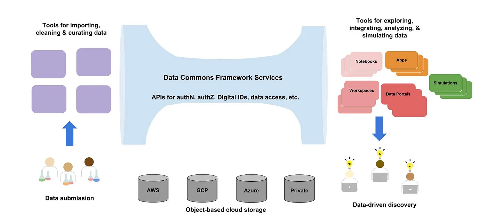

Data Commons, Data Meshes, and Mesh Services
We begin with some definitions.
A data commons is a cloud-based data platform along with a governance framework that together allow a community to manage, analyze and share its data.
A data ecosystem contains multiple data commons, data repositories, cloud computing resources, knowledgebases, and other cloud-based applications that can interoperate using a common set of services (called framework or mesh services) for authentication, authorization, accessing, and other core services.
Although most data commons use public clouds, a data commons or data ecosystem must use public, on-premise or hybrid clouds.
Data Commons
The paper below is a short commentary summarizing ten lessons learned over the past decade building data commons. In particular, it emphasizes the importantance of i) focusing the data commons on a specific research community and the research problems they are interested in; ii) curating the data in a commons using one (or more) data models); iii) harmonizing the data using a common set of bioinformatics pipelines; and, iv) processing the data to produce derived data of interest and providing the software tools and applications needed to explore and analyze the data.
- Grossman, Robert L. Ten lessons for data sharing with a data commons. Scientific Data 10, no. 1 (2023): 120. pdf
GDC.The NCI Genomic Data Commons is a widely used data commons containing cancer genomics data and associated clinical, imaging and other data. It is used by over 60,000 researchers each month and it distributed over 2 PB of data in an average month. Here are some papers describing it.
- Heath AP, Ferretti V, ... and Grossman RL, The NCI Genomic Data Commons, Nature Genetics 2021 Mar;53(3):257-262. PMID: 33619384 doi: 10.1038/s41588-021-00791-5. PMID: 33619384 pdf
- Zhenyu Zhang, Kyle Hernandez, Jeremiah Savage, Shenglai Li, Dan Miller, Stuti Agrawal, Francisco Ortuno, Louis M. Staudt, Allison Heath, and Robert L. Grossman, Uniform genomic data analysis in the NCI Genomic Data Commons, Nature communications 12, no. 1 (2021), pages 1-11. PMID: 33619257 doi: 10.1038/s41467-021-21254-9. pdf
- Shane Wilson, Michael Fitzsimons, Martin Ferguson, ..., Robert L. Grossman, Developing Cancer Informatics Applications and Tools Using the NCI Genomic Data Commons API, Cancer Research, volume 77, number 21, 2017, pages e15-e18. pdf
- Robert L. Grossman, Allison P. Heath, Vincent Ferretti, Harold E. Varmus, Douglas R. Lowy, Warren A. Kibbe, and Louis M. Staudt, Toward a Shared Vision for Cancer Genomic Data, New England Journal of Medicine, September 22, 2016, Volume 375, Number 12, pages 1109-12. pdf
Other data commons. Here are some papers about other data commons.
- Robert L. Grossman, Jonathan R. Dry, Sean E. Hanlon, Donald J. Johann, Anand Kolatkar, Jerry SH Lee, Christopher Meyer, Lea Salvatore, Walt Wells, and Lauren Leiman, BloodPAC Data Commons for liquid biopsy data, JCO Clinical Cancer Informatics Volume 5, 2021, pages 479-486. PMID: 33929890 DOI: 10.1200/CCI.20.00179 pdf
- Danne C. Elbers, Nathanael R. Fillmore, Feng-Chi Sung, Spyridon S. Ganas, Andrew Prokhorenkov, Christopher Meyer, Robert B. Hall, Samuel J. Ajjarapu, Daniel C. Chen, Frank Meng, Robert L. Grossman, Mary T. Brophy, and Nhan V. Do, The Veterans Affairs Precision Oncology Data Repository, a Clinical, Genomic, and Imaging Research Database, Patterns Volume 1 (2020) 100083. DOI: 10.1016/j.patter.2020.100083 pdf
- Trunnell, Matthew, Casey Frankenberger, Bala Hota, Troy Hughes, Plamen Martinov, Urmila Ravichandran, Nirav S. Shah, Robert L. Grossman, and Pandemic Response Commons Consortium. "The Pandemic Response Commons." medRxiv (2022). doi.
Data Ecosystems
The Biomedical Research Hub (BRH) is a data ecosystem spanning over eight data commons that provides workspaces, privacy preserving record linkage and other services for working with data from 2 or more data commons.
- Craig Barnes, Binam Bajracharya, Matthew Cannalte, Zakir Gowani, Will Haley, Taha Kass-Hout, Kyle Hernandez, Michael Ingram, Hara Prasad Juvvala, Gina Kuffel, Plamen Martinov, J. Montgomery Maxwell, John McCann, Ankit Malhotra, Noah Metoki-Shlubsky, Chris Meyer, Andre Paredes, Jawad Qureshi, Xenia Ritter, L. Philip Schumm, Mingfei Shao, Urvi Sheth, Trevar Simmons, Alexander VanTol, Zhenyu Zhang, and Robert L. Grossman, The Biomedical Research Hub: A Federated Platform for Patient Research Data, Journal of the American Medical Informatics Association, 2021, doi:10.1093/jamia/ocab247. pdf
The End-to-End Design Principle for Data Ecosystems
This section is based on a Medium post that I wrote in 2018 advocating an architecture for data commons and data ecoystems that keeps the core system relatively simple, but supports a rich ecosystem of applications for curating, harmonizing and sharing data that is submitted to the ecoystem and for exploring, integrating, and analyzing the data by researchers using the ecoystem.
In an influential 1984 paper called "End-to-end arguments in systems design," Jerome Saltzer, David Reed and David Clark (pdf) argued for using as few software services as possible when building large complex distributed systems.
This is one of the main principles in the design of the Internet. It states that network features should be implemented as close to the end points of the network -- the applications -- as possible. This is commonly expressed by describing the system as a "dumb" network with "smart" applications at the endpoints. What this means in practice is that as new innovative applications are developed for creating new types of content (one "end") and for giving viewers access to the content (the other "end"), the intermediate routers and switches do not need to be updated. A good example is provided by streaming media, which was a new type of content that required new types of applications, but did not require any changes to the core routers and switches that support the internet.
Narrow middle architecture. Applying this principle to data commons and data ecosystems gives an architecture that I call the narrow middle architecture. With this approach, the fewest possible services are used for the core of the system ("the narrow middle") and only these services are standardized. With this architecture, the importing, curation and integration services for getting data into the commons (one "end") and the data exploration, analysis and collaboration services for getting knowledge out of the commons (the other "end") are not standardized, but instead are the focus of different competing and innovative efforts until the community begins to recognize and adopt approaches that seem to be most effective. See Figure 1.
It's important to note that all the services required to make data FAIR and all the services to access the structured data in data commons and data repositories are part of the core are part of the narrow middle mesh services.

Figure 1. The narrow middle architecture for data commons and data ecosystems.
An important question to ask is: what are the smallest number of software services that can be used to be flexible, extensible, distributed data ecosystems?
I advocated in my 2018 Medium post, and this still seems reasonable today five years later< that you can build data commmons and data ecosystems with just a handful of services.
Core data mesh services.
- Persistent Digital IDs, which given a globally unique ID (GUID) return the one or more locations that contain the corresponding data object. We assume that the underlying data objects comprising datasets of interest are stored in public and private clouds that are accessible through S3-compatible APIs.
- A metadata service, which given a GUID returns a core set of metadata.
- Authentication and authorization services, which enable the authentication of users and also can determine whether a given authenticated user is authorized to see a particular dataset.
- Servies to support structured data. for defining a data model, and for validating, submitting and querying data with respect to this data model.
The first three services are sufficient to build a data lake of FAIR data objects and FAIR semistructured data that can be accessed by applications. The last service also supports structured data.
More details of the narrow middle architecture for data commons and data ecosystems can be found in the Medium post:
- Robert Grossman, A Proposed End-To-End Principle for Data Commons, July 6, 2018, Medium, link.
Standards
The Global Alliance for Genomics and Health (GA4GH) has created a number of standards, including DRS for accessing cloud-based data objects and visas and passports for providing authorization information about data that provide standards for specifying the four data mesh services above.- Rehm, Heidi L., Angela JH Page, Lindsay Smith, Jeremy B. Adams, Gil Alterovitz, Lawrence J. Babb, Maxmillian P. Barkley et al., GA4GH: International policies and standards for data sharing across genomic research and healthcare, Cell Genomics 1, no. 2, 2021, 100029. pdf
Gen3 - Open Source Software for Data Commons and Data Meshes
Gen3 is an open source data platform that supports:
- data commons
- data ecosystems (aka data meshes)
- data mesh services for building data commons and data meshes
- workspaces over data commons and data meshes
You can found out more about Gen3 on the Gen3 homepage.
Setting Up and Operating Data Commons and Data Meshes
The open source Gen3 services to build and operate Gen3 data commons and data meshes are designed to work with Kubernetes so that they can be deployed in a cloud-agnostic fashion.
The Gen3 services and componets have recently been moved to Helm charts to make setting up the Gen3 services easier (not all the components have Gen3 have been moved to Helm charts yet, but this migration should be over in CY 2023). This makes it easy to bring up Gen3 on your laptop or in a virtual machine so that you can have personal deployments or lab-scale deployments, in addition to the larger Kubernetes scale deployments.
Commons Services Operations Centers (CSOC). Just as there are security operations centers (SOCs) and network operations centers (NOCs), you can set up a Commons Services Operations Center (CSOC) to set up, operate, and monitor the data mesh services required for data commons and data ecosystems, as well as the data commons and data ecosystems themselves. Typically, the CSOC also provides the security and compliance required for the commons and ecosystems.
Several organizations have set up CSOCs, including the Center for Translational Data Science at the University of Chicago, the not-for-profit Open Commons Consortium, the Australian BioCommons, and Bristol Myers Squibb.
Also, work is underway to develop Gen3 as a Service, so you can have a self service way of bringing up an entire Gen3 commons or ecosystem. This can also be done in a collaboration with a CSOC that can provide any required security and compliance.
Interoperating Data Commons
Another important question to consider is what are the minimal services so that two or more data commons can decide whether they can interoperate, in the sense that an authorized user in one commons can access data from another commons that he or she is authorized to access.
- Grossman, Robert L., Rebecca R. Boyles, Brandi N. Davis-Dusenbery, Amanda Haddock, Allison P. Heath, Brian D. O‘Connor, Adam C. Resnick, Deanne M. Taylor, and Stan Ahalt. A Framework for the Interoperability of Cloud Platforms: Towards FAIR Data in SAFE Environments. arXiv:2203.05097 (2022).
This paper introduces the following principle called SAFE for interoperating two or more data commons: "The data governance process for a dataset should authorize users, the platform governance process for a dataset should authorize cloud platform environments, and two or more cloud platforms can interoperate by trusting these authorizations." SAFE is an abbreviation for Secure and Authorized FAIR Environment (SAFE).